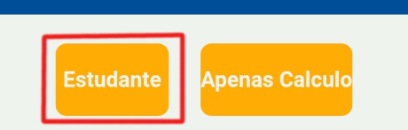
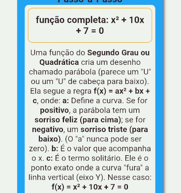
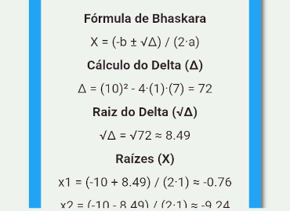
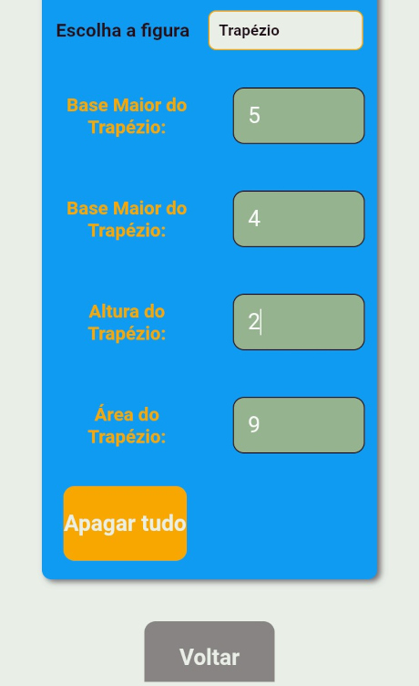
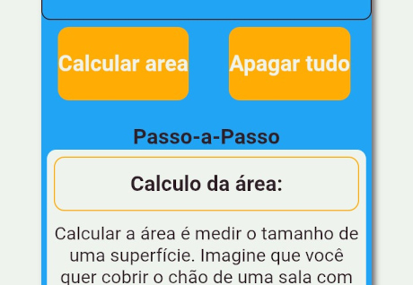

Como usar as Calculadoras
Escolha seu Estilo
No modo Estudante você recebe o resultado com os passos.

Ideal para quem quer entender a lógica matemática.
Exemplo no modo estudante

Exemplo de resolução de equação do segundo grau usando Bhaskara.

Visualização das raízes da função no gráfico.
Modo Apenas Cálculo

Digite os valores e o resultado aparece automaticamente.
Controle Total

Use o botão Calcular para validar os dados manualmente.
O botão Apagar Tudo limpa todos os campos para iniciar um novo problema.
Matemática Rápida
Resolva problemas de matemática em um só lugar. Otimize cálculos, pratique conceitos e explore ferramentas que tornam o aprendizado mais simples e acessível com a calculadora matemática online do Algebrando.
No Algebrando, você pode resolver expressões e equação de forma intuitiva, utilizando uma calculadora pensada tanto para quem precisa apenas do resultado quanto para quem deseja entender o processo. Nossa calculadora de equação permite que você escolha entre dois modos de uso, adaptando-se perfeitamente ao seu objetivo de estudo ou trabalho online:
Modo Passo a Paso: Mostra a resolução passo a passo e detalha a lógica por trás de cada etapa da equação.
Modo Cálculo Rápido: Fornece o resultado imediatamente após inserir os valores, ideal para conferir respostas rápidas.
Além disso, oferecemos uma calculadora de porcentagem robusta para você descobrir aumentos, descontos e valores de porcentagem rapidamente, facilitando cálculos do dia a dia e exercícios financeiros.